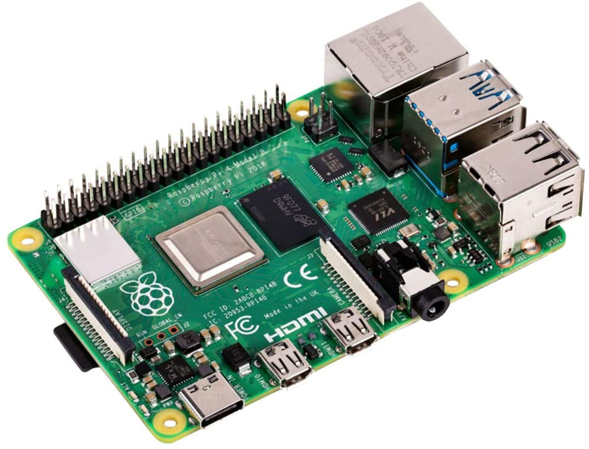
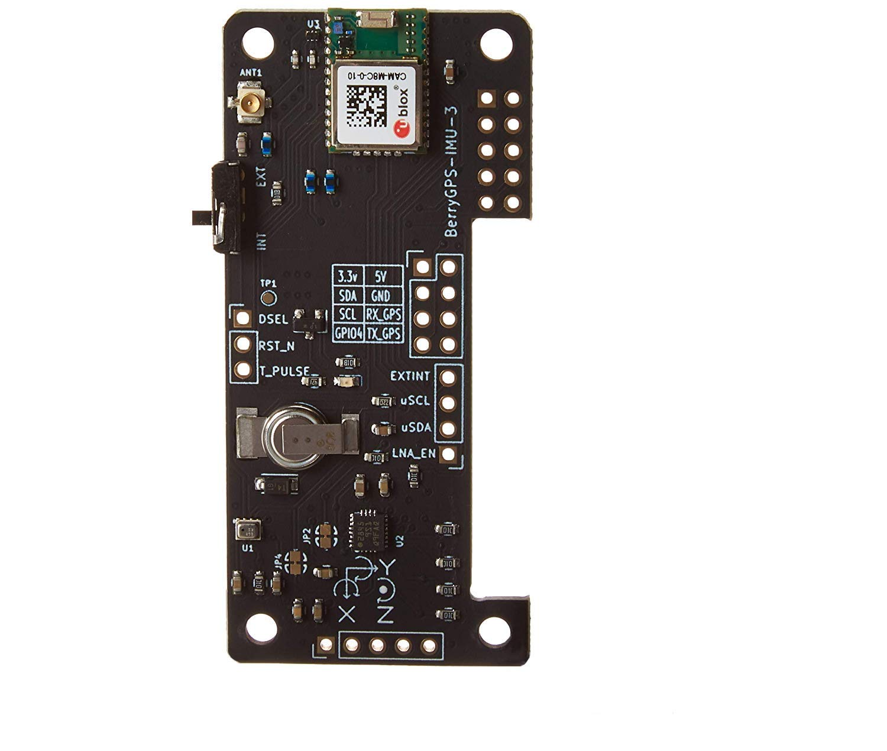
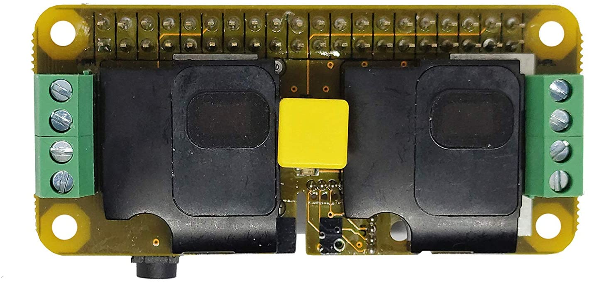
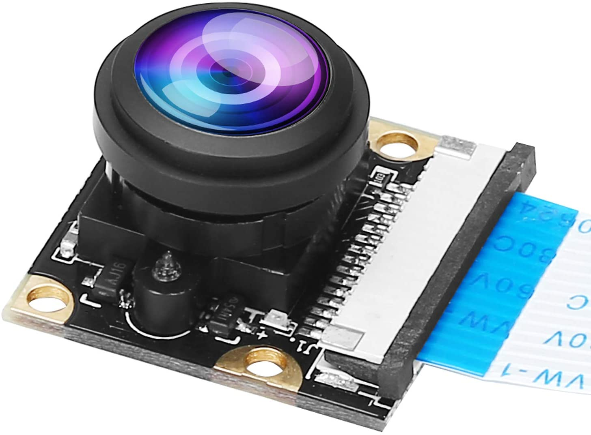
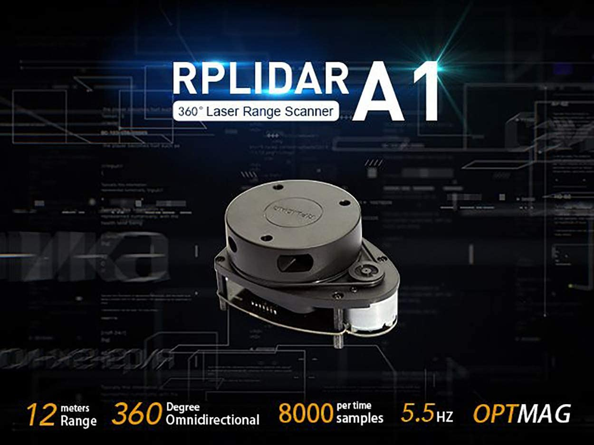

About Team 26's project.
The Escort Robot Project
Abstract
The Escort Robot will escort a user upon request from any point on the University of Nevada, Reno (UNR) campus. The robot will follow the user at close proximity while monitoring their trip to their car and will use visual and audio clues to identify potential threats to the user. In case of a threat, the robot will activate an audible and visual alarm, and contact emergency services via text message to report the incident. The text will include the location and a brief description of the incident. The text message may also include a link to a video (recording and/or live feed) of the incident, which enables the authorities to monitor the incident and identify the attacker.
Introduction
Team 26 is developing a security-focused escort robot with the intent of providing a safer and more dependable route for users on the University of Nevada, Reno (UNR) campus grounds. The project is intended to feature autonomous image tracking and object recognition, offer a quick response alarm system, and the ability to alert emergency services through text message. The goal is to provide UNR students and staff a method by which to use an escort robot and have it accompany them to their destination in order to feel more comfortable and secure walking campus grounds at any time of the day.
The user needs to create an account on the free Escort Robot iOS mobile application in order to request the robot to accompany them. Video and audio monitoring will be enabled for the duration of the trip, however, the user can choose whether the trip will be recorded and uploaded to the Escort Robot’s server. The user then will follow a series of instructions on the mobile application that will enable the robot to identify and recognize them as the object to be followed for that trip.
There haven’t been any significant changes in the project’s requirements since the completion of Project Part 2. Team 26 is still committed to designing a method for the robot to follow a user autonomously while providing the aforementioned security suite in order to deter an emergency situation and contact emergency services in the event of a security incident.
The team had made progress in the area of budgeting. A detailed document of required hardware with the links to purchase them has been created and shared with Computer Science personnel at UNR who are responsible for funding projects. The document helped Team 26 identify the components that will be used in the project and the various libraries, software, compilers, and techniques required to complete this project, such as OpenCV, Python, C++, and ROS & ROS2.
Team 26 has two advisors: Dr. Emily Hand and Dr. Keith Lancaster
Escort Robot's Components
PiRacer
 The base of the Escort Robot will be a PiRacer, which is shown in figure 6. This will allow us to build and attach components on top of using IO_Pins and RasberryPi compatible sensors. When attaching components, we will use Fusion 360 to design and 3d print mounts for the sensors.
The base of the Escort Robot will be a PiRacer, which is shown in figure 6. This will allow us to build and attach components on top of using IO_Pins and RasberryPi compatible sensors. When attaching components, we will use Fusion 360 to design and 3d print mounts for the sensors.
Raspberri Pi 4
 The escort Robot will have multiple Raspberry Pi’s, which is shown in Figure 2, to process the amount of data gathered from different sensors and to communicate with a master Raspberry Pi only when needed.
GPS, Accelerometer, Gryoscope, Altitude Sensor
 The Escort Robot will be equipped with the hardware shown in figure 1 to provide the data such as GPS, Accelerometer, Gyroscope, and altitude information. The robot will need to keep track of GPS coordinates to help find a pathway back to a home location or when meeting up with a new client. The Accelerometer will keep track if the robot is stuck or the path was altered by an unknown object. The Gyroscope will allow us to keep track of information like the robot is currently going up a hill to allow for speed and digitally mapping of areas. The Altitude Sensor will provide information if the robot is currently on the right floor level.
Audio DAC HAT Sound Card
 The escort robot will use the Audio Sound card shown in Figure 5 to communicate. This will allow it to hear when there is a need for help by yelling the word help. This will also allow us to set off alarms to hopefully prevent incidents from happening when the escort robot is following.
Camera Module with 222 FOV Fisheyes wide Angle 5MP Webcam
 In Figure 3 there is another camera shown which will be aimed towards a higher altitude direction to see and keep data of the target being followed by the escort robot. This one will be the one shown on the application while the other one is for path detection and is already a part of the base robot PiRacer.
Lidar
 In figure 4 there is a lidar encoder which will be used by the Escort Robot. The lidar will be used to detect objects which are under the range of 12 meters in 360 degrees.
Team 26's Members
Chris Collum:
Database
Kevin Kurashewich:
IOS App
Omar Zerba:
IOS App
Stephen Leer:
Website/server
Class Info
University of Nevada Reno, CSE Department
Senior Project for CS 426
Spring 2021
Teachers
Dr. David Feil-Seifer
Dr. Devrin Lee
Advisors
Dr. Emily Hand
Dr. Keith Lancaster
Project Resources
ROS learning
ROS
OpenCV
Fusion 360
Google Scholar Journals, etc.
ROS overview
OpenCV PowerPoint with Important Links
OpenCV Book